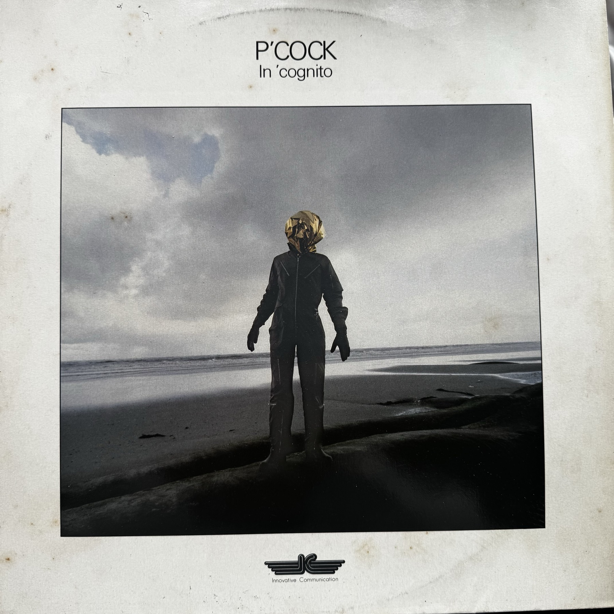

Utz Bender、Peter Herrmann 与 P’cock
封套将六首作品的作曲、编曲共同署名给这两位成员与乐团。Bender 担任主唱，也在《House in the Storm》演奏独奏吉他；Herrmann 负责键盘和合成器。
Innovative Communication · Germany, 1981
一张把合成器和摇滚乐队放在一起听的德国唱片。第 1 面用十一分钟的《House in the Storm》开场，第 2 面的曲目则从三分半一路拉长到八分钟。封套特意印着 45 RPM，落针前记得把唱机调到 45 转。
按唱片顺序开始听 ↓
封套将六首作品的作曲、编曲共同署名给这两位成员与乐团。Bender 担任主唱，也在《House in the Storm》演奏独奏吉他；Herrmann 负责键盘和合成器。
Armin Strecker 担任主音吉他，Axel Krause 演奏贝斯，Tommy Betzler 负责鼓与打击乐。顺着贝斯和鼓听，再把注意力转到吉他和合成器，可以听出乐队如何一面稳住节拍，一面改变音色。
这位德国电子音乐家担任本辑制作人。唱片在 Winsen/Aller 的 IC Studio 录制，录音工程师为 Barney Roth-Profenius。制作与乐器演奏分别列在封套上。
曲序与时长按封套背面。展开正在播放的一面，每首先有一条听点，再给一个可以跟着音乐做的对照。
先听尺度最大的开场
这一首就占了第 1 面将近六成。可以先记住开场音色，再把独奏吉他当作路标：封套特别注明这首的吉他独奏由主唱 Utz Bender 担任。等吉他走到前面时，试着继续跟住背景的键盘与节奏，听前景变得更活跃时，伴奏怎样给它留出位置。
听长曲之后，人声如何变得醒目
开场长曲刚过，这首把时间压缩到四分多钟。第一次把注意力放在主唱每句唱完的位置，再听乐器怎样填上或保留间隙。题名把欢乐时光和忧伤摆在一起；可以听听节奏的推力和歌声的语气是否给你同一种感觉。
听三分钟里什么最抓耳
这是全盘最短的一首。先记住最早抓住你的一个元素：可能是一句人声，也可能是一段节奏。等它再出现时，听它身后的声音有没有变。连着前两首听，第 1 面由十一分钟缩到三分钟，这种篇幅上的收紧本身就是一种节奏。
翻面后，先找新的脉搏
不用急着追主旋律，先用手指跟住一个稳定的拍子，再听贝斯、鼓和较亮的声音分别怎样踩在拍点上或穿过空隙。可以和刚结束的《Always Funny》连起来听：两首都短，但一首收住一面，一首得在翻面后迅速建立新的期待。
听哪一层在推动情绪
这里有比翻面开场更宽的展开空间。先跟最靠前的旋律，再听一遍它背后较持续的键盘音色和较短的鼓点。把这两层分开，会更容易分辨：某处显得更紧，是因为节拍真的变了，还是因为声部加厚、音色更亮了。
用最后一首回听开场
最后一首把篇幅再次拉长。试着像听《House in the Storm》那样记住一个开头音型，再留意中段以后它是否回来、回来时由哪种音色承担。两首长曲分别开盘与收盘；对照它们怎样改变声部的密度，比只追旋律更能听出整张唱片的轮廓。
封底左上角印着「STEREO 45 RPM」，右上角是目录号 KS 80005。六首曲目的封套标示时长合计 36:30。海滩上的金色面罩与专辑名的匿名意味相呼应；封面摄影为 Michael Weisser，背面摄影署名 Peter Heinz 与 Rolf Gönner。